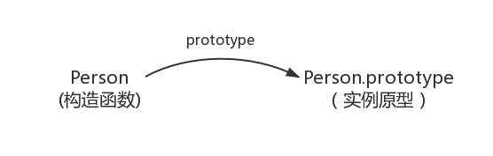
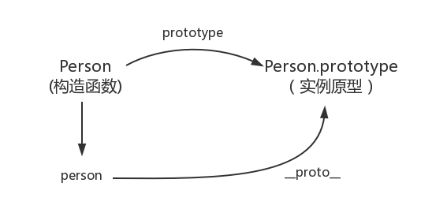
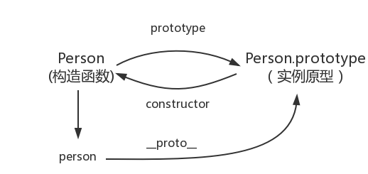
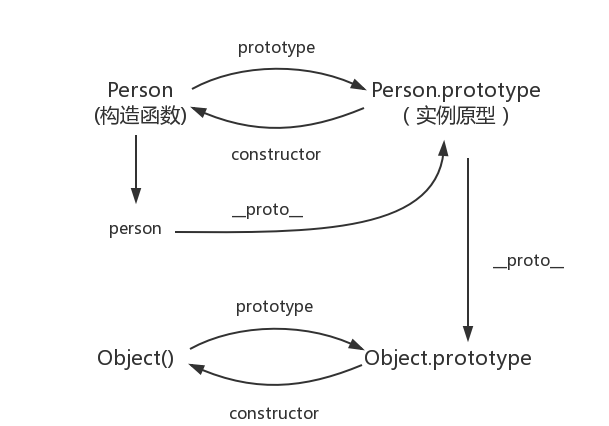
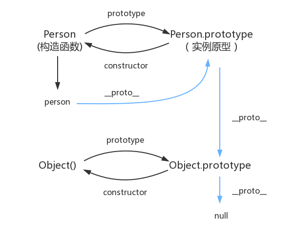

构造函数创建对象:
// 定义构造函数，
function Persion() {
}
var persion = new Persion();
persion.name = "ruofeng";
console.log(Persion, persion);
此时Persion就是一个构造函数，我们用new创建了一个对象实例persion此时Persion就是一个构造函数，我们用new创建了一个对象实例persion
prototype
每个函数都有一个 prototype 属性，每一个JavaScript对象(null除外)在创建的时候就会与之关联另一个对象，这个对象就是我们所说的原型，每一个对象都会从原型"继承"属性。
function Person() {
}
// 虽然写在注释里，但是你要注意：
// prototype是函数才会有的属性
Person.prototype.name = 'Kevin';
var person1 = new Person();
var person2 = new Person();
console.log(person1.name) // Kevin
console.log(person2.name) // Kevin

proto
每一个JavaScript对象(除了 null )都具有的一个属性，叫proto，这个属性会指向该对象的原型
function Person() {
}
var person = new Person();
console.log(person.__proto__ === Person.prototype); // true

constructor
每个 原型 都有一个 constructor 属性指向关联的构造函数 实例原型指向构造函数
function Person() {
}
console.log(Person === Person.prototype.constructor); // true

function Person() {
}
var person = new Person();
console.log(person.__proto__ == Person.prototype) // true
console.log(Person.prototype.constructor == Person) // true
// 顺便学习一个ES5的方法,可以获得对象的原型
console.log(Object.getPrototypeOf(person) === Person.prototype) // true
实例与原型
与原型
function Person() {
}
Person.prototype.name = 'Kevin';
var person = new Person();
person.name = 'Daisy';
console.log(person.name) // Daisy
delete person.name;
console.log(person.name) // Kevin
在这个例子中，我们给实例对象 person 添加了 name 属性，当我们打印 person.name 的时候，结果自然为 Daisy。
但是当我们删除了 person 的 name 属性时，读取 person.name，从 person 对象中找不到 name 属性就会从 person 的原型也就是 person.proto ，也就是 Person.prototype中查找，幸运的是我们找到了 name 属性，结果为 Kevin。
原型与原型
var obj = new Object();
obj.name = 'Kevin'
console.log(obj.name) // Kevin

原型链
console.log(Object.prototype.__proto__ === null) // true

JavaScript 默认并不会复制对象的属性，相反，JavaScript 只是在两个对象之间创建一个关联，这样，一个对象就可以通过委托访问另一个对象的属性和函数，所以与其叫继承，委托的说法反而更准确些